Kakeami is a traditional manga shading technique in which small rectangular tiles are filled with parallel hatching lines at varying angles to create tonal gradation. Despite its importance in manga production, no formal framework exists for defining kakeami quality or evaluating automatic generation algorithms. This report presents the first mathematical formulation of kakeami quality, proposing six complementary metrics — angle contrast ($E_{\mathrm{contrast}}$), angle entropy ($H_{\mathrm{angle}}$), angle autocorrelation at graph distances 2 and 3 ($R_2$, $R_3$), coverage ratio ($C_{\mathrm{cov}}$), and Voronoi cell area CV ($U_{\mathrm{vor}}$) — drawing on concepts from quasicrystalline order and spatial statistics. We argue that good kakeami exhibits quasicrystalline order: short-range angular contrast (high $E_{\mathrm{contrast}}$) without long-range periodic repetition ($R_k \approx 0$). We conduct a controlled 2×2 factorial experiment (tile placement × angle assignment) with 100 random seeds, supplemented by a deterministic grid-checkerboard reference condition. Two-way ANOVA reveals that angle assignment is the dominant factor ($\eta^2 \approx 0.94$ for $E_{\mathrm{contrast}}$, $\eta^2 \approx 0.89$ for $R_2$), and the proposed Poisson-disk + BFS greedy combination achieves the best overall quality. The $R_k$ autocorrelation metrics reveal the structure of angle correlations beyond immediate neighbours: random conditions show $R_2 \approx 0$ (no correlation), while BFS greedy introduces a mild positive $R_2$ as a side effect of local contrast maximisation. The checkerboard’s low angle diversity ($H_{\mathrm{angle}} \approx 0.28$ vs. $\geq 0.95$ for BFS) remains the clearest discriminator of its mechanical character.
Kakeami (カケアミ) is a shading technique in Japanese manga. Small blocks are filled with parallel hatching lines, and adjacent blocks use different angles to create tonal gradation (Pixiv Encyclopedia; Toudo, 2003). The technique has a hierarchy of density: 1-kake (single direction), 2-kake (perpendicular overlay at 90°), 3-kake (adding a 45° diagonal), and 4-kake (four directions at 45° intervals).
Unlike Western cross-hatching, where long strokes traverse entire regions along contour or principal curvature directions, kakeami uses a fragmented patch structure: each tile is a small, self-contained unit whose orientation is chosen to contrast with its neighbours (Japanese with Anime).
Despite its importance in manga production, no academic paper has formally defined kakeami or evaluated automatic generation algorithms quantitatively. We identify five properties of good kakeami: (1) local angular contrast — neighbouring tiles should differ in angle; (2) angle diversity — a rich variety of orientations, not just two; (3) spatial coverage — no visible gaps between tiles; (4) spatial uniformity — evenly distributed tile centres; and (5) aperiodicity — no long-range periodic repetition of angles. This last property distinguishes natural-looking kakeami from mechanical patterns like a checkerboard. We propose a six-metric framework that independently measures each property and a controlled 2×2 factorial experiment evaluating two independent components of a proposed algorithm: tile placement (Poisson-disk vs. uniform random) and angle assignment (BFS greedy vs. random).
The remainder of the report is organised as follows. Section 2 reviews related work in NPR hatching and manga generation to identify the gap this work addresses. Section 3 introduces a novel mathematical formulation for kakeami quality, drawing on concepts from nematic liquid crystal physics and direction field theory. Section 4 describes the proposed algorithm and the baseline conditions. Section 5 details the experimental setup, Section 6 presents the quantitative results including two-way ANOVA and effect size analysis, Section 7 discusses their implications, Section 8 outlines directions for future work, and Section 9 concludes.
To situate our contribution, we survey three lines of prior work: classical NPR hatching, ML-based manga generation, and aperiodic tiling theory. In each case, we highlight what existing approaches optimise and where kakeami-specific generation remains unaddressed.
Praun et al. (2001) introduced Tonal Art Maps for real-time hatching in non-photorealistic rendering (NPR). Their approach aligns strokes along principal curvature directions, prioritising smoothness. Hertzmann & Zorin (2000) similarly optimise direction fields for illustrative hatching on 3D surfaces. Our approach inverts this paradigm: kakeami requires contrast maximisation between adjacent tiles, making neighbouring angles as different as possible.
Recent work uses machine learning for manga screentone generation: ScreenVAE (Xie et al., SIGGRAPH Asia 2020), Zhang et al. (CVPR 2021), and Sketch2Manga (2024). These are data-driven and provide limited user control over geometric parameters. A purely geometric, controllable approach to kakeami-specific hatching remains unexplored.
The Pinwheel tiling (Conway & Radin, 1998) provides aperiodic tessellations with infinite rotational diversity. While studied in mathematical tiling theory, no prior application to NPR hatching has been reported.
In geometry processing, direction fields on meshes are optimised using Ginzburg–Landau energy functionals (Beaufort et al., 2017; Viertel & Osting, 2019), primarily for quad meshing rather than artistic hatching. The connection between direction fields and nematic liquid crystals is well known in physics (both deal with headless directors on manifolds), but no prior work applies this framework to evaluate or generate kakeami patterns.
The combination of Poisson-disk sampling for tile placement, Voronoi adjacency graph construction, and BFS greedy angle optimisation has no precedent in the literature. This report provides the first quantitative ablation study of these components using quality metrics newly proposed for kakeami evaluation.
The related work reveals a clear gap: no formal framework exists for defining what makes a kakeami pattern “good.” In this section, we propose a novel mathematical formulation that addresses this gap. The data structures (Section 3.2) mirror the manual drawing process, while the quality metrics (Section 3.3) are original contributions of this work, capturing the five key properties of good kakeami identified in Section 1 — local angular contrast, angle diversity, aperiodicity, spatial coverage, and spatial uniformity.
A fundamental observation is that hatching lines at 0° and 180° are visually identical. This motivates modelling orientations on the real projective line: $\Omega_\theta = \mathbb{RP}^1 \cong [0, \pi)$, with the Fubini–Study distance $d_{\mathbb{RP}^1}(\theta_1, \theta_2) = \min(|\theta_1 - \theta_2| \bmod \pi,\; \pi - |\theta_1 - \theta_2| \bmod \pi)$. This identification, standard in the $N$-RoSy direction field literature (Vaxman et al., 2016), is what enables us to define meaningful distance-based quality metrics below.
We define a hierarchy that mirrors the manual kakeami drawing process:
Given a configuration $K$ and its adjacency edge set $E$ (Voronoi adjacency edges derived from Delaunay triangulation of tile centres), we propose six complementary metrics split across three axes: two angular metrics evaluating local orientation quality, two aperiodicity metrics detecting long-range periodic repetition, and two spatial metrics evaluating placement quality. Together they independently measure the five properties of good kakeami (Section 1). To the best of our knowledge, these metrics have not been previously defined for hatching evaluation.
The most direct measure of kakeami quality: the normalised mean RP¹ distance over all adjacency edges. $$E_{\mathrm{contrast}} = \frac{2}{\pi |E|} \sum_{(i,j) \in E} d_{\mathbb{RP}^1}(\phi_i, \phi_j) \;\in [0, 1]$$ where $\phi_i$ is the primary angle of tile $i$. Higher values indicate better angle separation between neighbours, which is the defining visual characteristic of kakeami.
The normalised Shannon entropy of the primary-angle distribution measures how diverse the angle usage is across all tiles: $$H_{\mathrm{angle}} = -\frac{1}{\ln N_{\mathrm{bins}}} \sum_{b=1}^{N_{\mathrm{bins}}} p_b \ln p_b \;\in [0, 1]$$ where the angle range $[0, \pi)$ is divided into $N_{\mathrm{bins}} = 12$ equal bins (15° each) and $p_b$ is the fraction of tiles whose primary angle falls in bin $b$. $H_{\mathrm{angle}} = 1$ indicates a perfectly uniform distribution of angles across all bins; $H_{\mathrm{angle}} = 0$ means all tiles share the same angle. A checkerboard pattern using only 0° and 90° achieves $H_{\mathrm{angle}} = \ln 2 / \ln 12 \approx 0.28$, revealing its limited angle diversity.
To detect long-range periodic repetition of angles, we define the angle autocorrelation at graph distance $k$: $$R_k = \frac{1}{|E_k|} \sum_{(i,j) \in E_k} \cos 2(\phi_i - \phi_j) \;\in [-1, 1]$$ where $E_k$ is the set of tile pairs at graph distance exactly $k$ (computed via BFS on the adjacency graph). $R_k = +1$ indicates that tiles at distance $k$ share the same angle (periodic repetition); $R_k = -1$ indicates perpendicular alignment; $R_k \approx 0$ indicates no angular correlation at distance $k$ (aperiodic). For kakeami, $|R_k| \approx 0$ for $k \geq 2$ is desirable — good local contrast ($R_1 \approx -1$) should not produce long-range patterns. We report the full correlogram $R_1, R_2, \ldots, R_D$ where $D$ is the graph diameter (capped at 15).
To quantify the spatial extent of angular order, we fit the envelope of the correlogram to an exponential decay model: $$|R_k| \approx A \exp(-k / \xi)$$ where $\xi$ is the correlation length — the characteristic distance over which angular correlations persist. The fit uses weighted nonlinear least squares (weights proportional to pair count at each $k$).
Interpretation:
The correlation length is a standard tool in spatial statistics (Cressie, 1993) and condensed matter physics, where it characterises the decay of orientational order in liquid crystals (de Gennes & Prost, 1993) and the degree of frustration in antiferromagnetic systems (Toulouse, 1977).
Relationship to $E_{\mathrm{LdG}}$. The previously used Landau–de Gennes energy $E_{\mathrm{LdG}} = \frac{1}{|E|} \sum_{(i,j) \in E} \sin^2(\phi_i - \phi_j)$ is mathematically equivalent to $(1 - R_1) / 2$ (where $R_1$ is the lag-1 autocorrelation). Since $E_{\mathrm{LdG}}$ is monotonically related to $E_{\mathrm{contrast}}$ and provides no independent information, we replace it with the lag-2 and lag-3 autocorrelations $R_2$ and $R_3$, which capture genuinely new information about aperiodicity.
The fraction of the region covered by at least one tile: $$C_{\mathrm{cov}} = \frac{|\{p \in R : p \in \bigcup_i \tau_i\}|}{|R|} \;\in [0, 1]$$ Estimated by sampling the region on a regular grid and testing point-in-rotated-rectangle membership. $C_{\mathrm{cov}} = 1$ means no background is visible; lower values indicate gaps due to tile clustering. This metric is standard in computational geometry as packing density and in NPR stippling as coverage ratio (Secord, 2002).
The coefficient of variation (CV) of Voronoi cell areas measures spatial uniformity of tile placement: $$U_{\mathrm{vor}} = \frac{\sigma_A}{\bar{A}}$$ where $A_i$ is the area of the Voronoi cell for tile $i$, clipped to the region boundary. $U_{\mathrm{vor}} = 0$ for a perfect lattice (all cells identical); $U_{\mathrm{vor}} \approx 0.53$ for a Poisson process (completely random); Poisson-disk sampling yields intermediate values. This is a standard measure in spatial statistics for point pattern analysis (Okabe et al., Spatial Tessellations, 2000). Lower values indicate more uniform tile distribution.
With the quality metrics defined above, we now describe the proposed algorithm and the baseline conditions designed to isolate the contribution of each component. The algorithm has two stages — tile placement and angle assignment — and we compare two strategies for each, yielding a 2×2 factorial design.
Figure 1 illustrates the three stages of the proposed method: (1) Poisson-disk sampling generates well-spaced tile centres, (2) Delaunay triangulation constructs the Voronoi adjacency graph, and (3) BFS greedy traversal assigns angles that maximise local contrast.
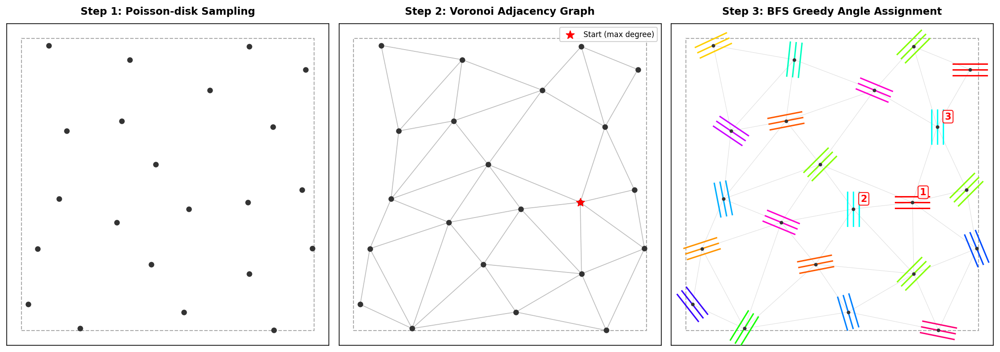
Poisson-disk (Bridson's algorithm): generates well-spaced points with a minimum distance guarantee ($r = \texttt{tileSize}$), producing blue noise spatial distribution. The resulting points serve as tile centres, and a Voronoi adjacency graph is constructed via Delaunay triangulation.
Uniform random: $n$ points drawn from $\mathrm{Uniform}([x_{\min}, x_{\max}] \times [y_{\min}, y_{\max}])$. The count $n$ is matched to the Poisson-disk output for the same seed, ensuring a fair comparison.
BFS greedy: Starting from the highest-degree node in the adjacency graph, a breadth-first search visits all nodes. For each visited node, 360 candidate angles $\{0, \pi/360, 2\pi/360, \ldots\}$ are evaluated, and the angle maximising $\min_{j \in N_{\mathrm{placed}}} d_{\mathbb{RP}^1}(\theta, \phi_j)$ is selected.
Random: each tile independently receives $\theta \sim \mathrm{Uniform}(0, \pi)$.
| BFS Greedy Angles | Random Angles | |
|---|---|---|
| Poisson-disk Placement | poissonBfs (proposed) | poissonRandom |
| Random Placement | randomBfs | randomRandom (baseline) |
In addition to the 2×2 factorial conditions, we include a fifth condition:
Grid + Checkerboard (gridCheckerboard).
Tiles are placed on an $8 \times 8$ regular square grid (spacing $= 6/8 = 0.75$),
yielding 64 tiles in the $[0, 6]^2$ region —
comparable to the ~69 tiles produced by Poisson-disk sampling.
Angles alternate between 0° and 90° in a checkerboard pattern:
tiles at even $(r + c)$ positions receive 0°, odd positions receive 90°.
This condition is entirely deterministic (identical across all seeds)
and serves as a crystalline order reference:
a periodic pattern that achieves competitive local contrast
and optimal spatial metrics ($C_{\mathrm{cov}} = 1$, $U_{\mathrm{vor}} = 0$),
but exhibits limited angle diversity ($H_{\mathrm{angle}} \approx 0.28$)
and a periodic $R_k$ structure,
producing a visually mechanical, non-natural result.
The $8 \times 8$ grid size was chosen to approximately match the Poisson-disk tile count (~69), enabling fairer comparison of spatial metrics ($C_{\mathrm{cov}}$, $U_{\mathrm{vor}}$).
To evaluate the five conditions defined in Section 4, we run a controlled experiment with 100 random seeds. All quality metrics are computed at $k = 1$ only, because the metrics ($E_{\mathrm{contrast}}$, $H_{\mathrm{angle}}$, $R_2$, $R_3$) depend solely on the primary angle $\phi_i$ of each tile and are therefore invariant to the kake count $k$. Representative images are rendered at $k = 1, 2, 3, 4$ for the median-$E_{\mathrm{contrast}}$ seed of each condition to illustrate the visual effect of layering.
| Parameter | Value |
|---|---|
| Conditions | 5 (poissonBfs, poissonRandom, randomBfs, randomRandom, gridCheckerboard) |
| $k$ (for metrics) | 1 |
| $k$ (for images) | 1, 2, 3, 4 |
| Seeds | 0–99 (100 seeds) |
| Total runs | $5 \times 100 + 5 \times 3 = 515$ (metrics + extra images) |
| Region | $[0, 0, 6, 6]$ |
| Tile size | 0.6 |
| Pitch | 0.08 |
| Line weight | 0.4 |
| PNG resolution | 512 × 512 |
| Adjacency | Voronoi (Delaunay triangulation of tile centres) |
Rendering uses the same SVG pipeline as the interactive generator, executed in a headless Chromium browser via Playwright for pixel-perfect fidelity. All render noise parameters (angle, spacing, weight) are set to 0 and background hatching is disabled to isolate the effect of placement and angle assignment strategies.
Adjacency consistency. All five conditions use Voronoi adjacency (derived from Delaunay triangulation of tile centres) for both BFS optimisation and metric evaluation. This ensures that the adjacency graph over which the BFS greedy algorithm maximises contrast is identical to the graph used to compute $E_{\mathrm{contrast}}$ and $R_k$.
Software. The generation pipeline is implemented in TypeScript 5.7 with Vite 6.2 as build tool and d3-delaunay 6.0.4 for Voronoi/Delaunay computation. Headless rendering uses Playwright 1.58.2 on Node.js 23.10. Statistical analysis is performed in Python using pandas, NumPy, SciPy, statsmodels, matplotlib, and Jinja2.
We present the experimental results using the six quality metrics defined in Section 3 ($E_{\mathrm{contrast}}$, $H_{\mathrm{angle}}$, $R_2$, $R_3$, $C_{\mathrm{cov}}$, $U_{\mathrm{vor}}$). All metrics are computed at $k = 1$. Section 6.1 shows box plots, Section 6.2 provides summary statistics, Section 6.3 presents the statistical analysis (two-way ANOVA and effect sizes), and Section 6.4 shows representative images across $k$ values.
Note: The Grid + Checkerboard condition is a deterministic reference configuration that produces identical results across all seeds (zero variance in the box plots). Its role as a metric-vulnerability demonstration is discussed in Section 7.3.
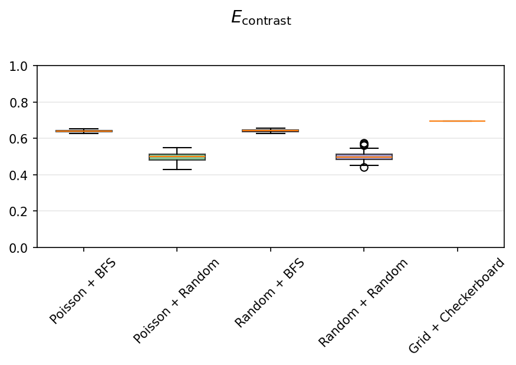
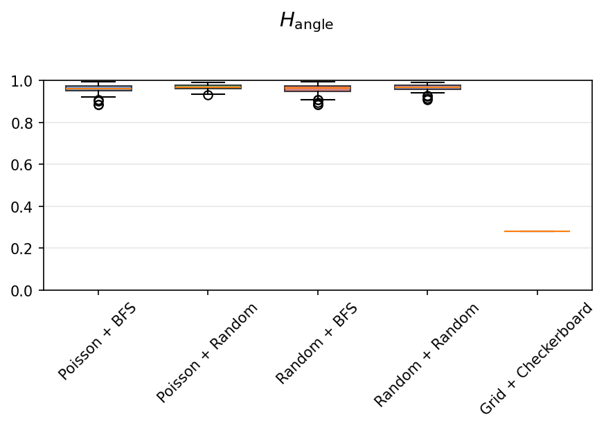
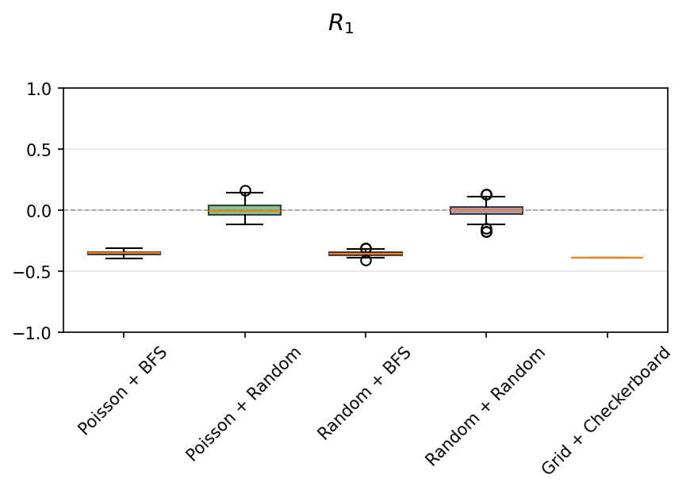
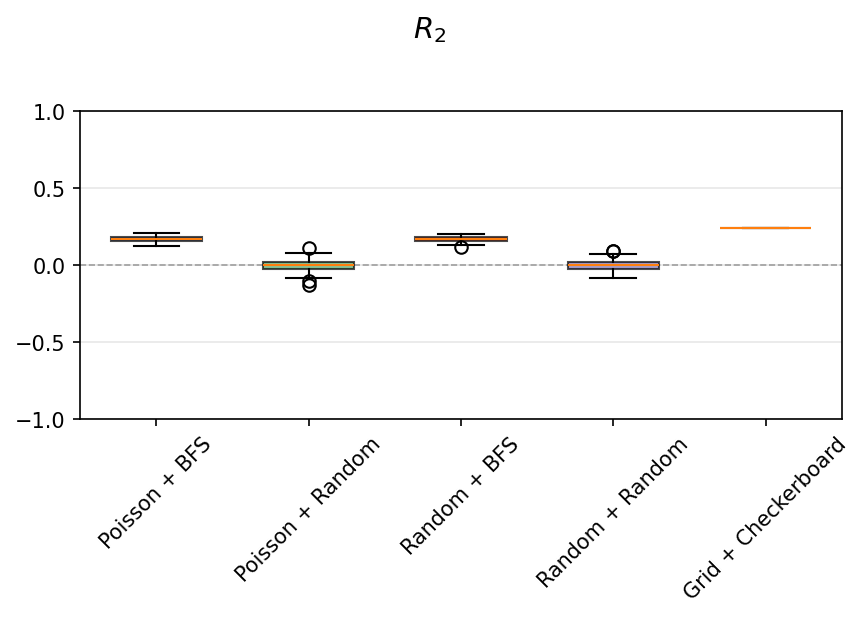
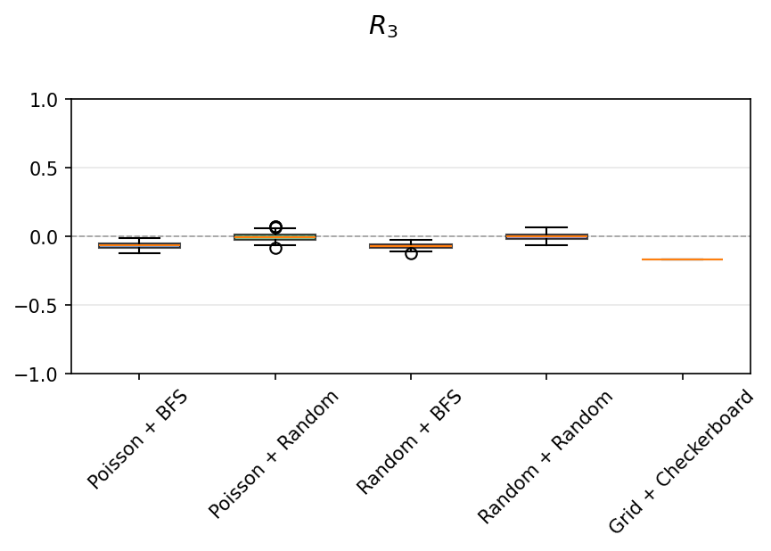
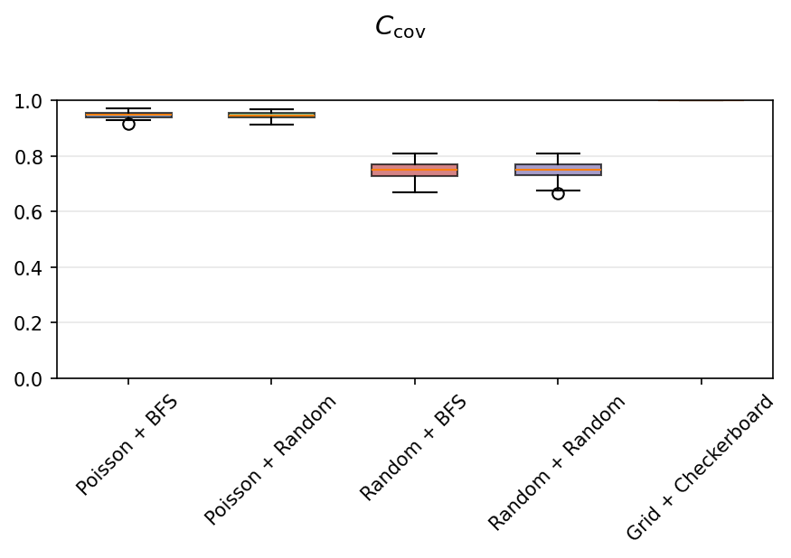
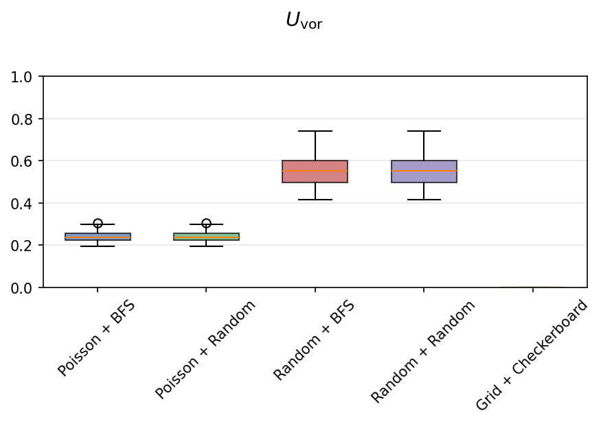
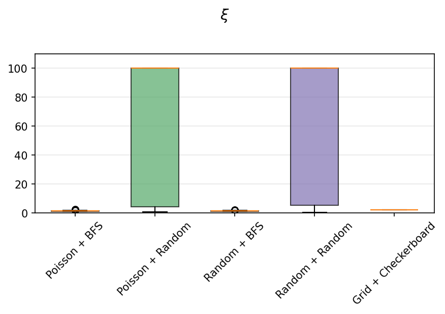
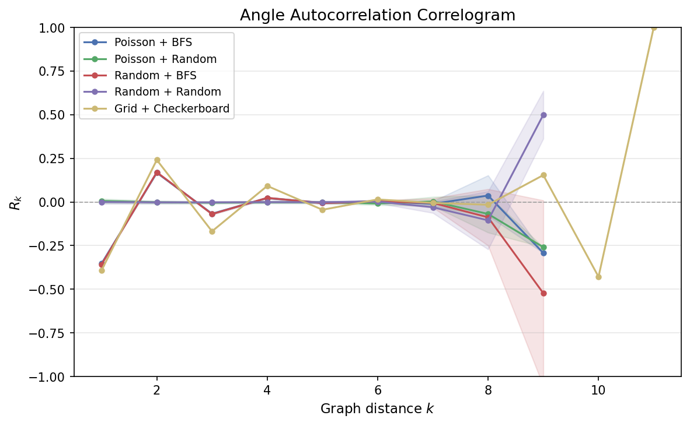
Cells with a dark green background indicate the best-performing condition for that metric; cells with a light green background indicate the second-best condition. Direction: higher is better for $E_{\mathrm{contrast}}$, $H_{\mathrm{angle}}$, and $C_{\mathrm{cov}}$; lower is better for $U_{\mathrm{vor}}$ and $\xi$; $|R_k|$ closest to 0 is best for $R_1$, $R_2$, and $R_3$. All metrics computed at $k = 1$.
| Condition | $E_{\mathrm{contrast}}$ | $H_{\mathrm{angle}}$ | $R_1$ | $R_2$ | $R_3$ | $C_{\mathrm{cov}}$ | $U_{\mathrm{vor}}$ | $\xi$ | Tiles | Edges |
|---|---|---|---|---|---|---|---|---|---|---|
| Poisson + BFS | 0.640 ± 0.005 | 0.960 ± 0.022 | -0.353 ± 0.017 | 0.168 ± 0.017 | -0.067 ± 0.024 | 0.948 ± 0.010 | 0.240 ± 0.021 | 1.305 ± 0.284 | 68.8 | 191.6 |
| Poisson + Random | 0.497 ± 0.026 | 0.968 ± 0.012 | 0.006 ± 0.063 | -0.002 ± 0.040 | -0.004 ± 0.031 | 0.947 ± 0.010 | 0.240 ± 0.021 | 57.439 ± 46.904 | 68.8 | 191.6 |
| Random + BFS | 0.642 ± 0.006 | 0.959 ± 0.023 | -0.358 ± 0.018 | 0.170 ± 0.017 | -0.069 ± 0.020 | 0.749 ± 0.030 | 0.558 ± 0.073 | 1.277 ± 0.206 | 68.8 | 192.1 |
| Random + Random | 0.500 ± 0.023 | 0.967 ± 0.015 | -0.000 ± 0.055 | -0.002 ± 0.037 | -0.002 ± 0.027 | 0.749 ± 0.030 | 0.558 ± 0.073 | 57.682 ± 46.570 | 68.8 | 192.1 |
| Grid + Checkerboard * | 0.696 ± 0.000 | 0.279 ± 0.000 | -0.391 ± 0.000 | 0.241 ± 0.000 | -0.168 ± 0.000 | 1.000 ± 0.000 | 0.000 ± 0.000 | 2.047 ± 0.000 | 64.0 | 161.0 |
* Grid + Checkerboard is a deterministic reference condition outside the 2×2 factorial design. Its role is discussed in Section 7.3.
To rigorously assess the effects of tile placement and angle assignment, we perform a two-way ANOVA (Type II) with placement and angle as fixed factors. The ANOVA uses only the original four 2×2 factorial conditions (gridCheckerboard is excluded as it does not belong to the factorial design). We report $F$-statistics, $p$-values, and effect sizes ($\eta^2 = SS_{\mathrm{effect}} / SS_{\mathrm{total}}$). Pairwise comparisons (Tukey HSD at $\alpha = 0.05$ and Cohen's $d$) are computed across all five conditions (10 pairs).
| Source | SS | df | $F$ | $p$ | $\eta^2$ |
|---|---|---|---|---|---|
| Placement | 0.000455 | 1 | 1.47 | 0.2261 | 0.0002 |
| Angle | 2.014764 | 1 | 6512.32 | 0.0000 | 0.9425 |
| Placement × Angle | 0.000023 | 1 | 0.07 | 0.7872 | 0.0000 |
| Residual | 0.122513 | 396 | — | — | 0.0573 |
| Source | SS | df | $F$ | $p$ | $\eta^2$ |
|---|---|---|---|---|---|
| Placement | 0.000115 | 1 | 0.34 | 0.5609 | 0.0008 |
| Angle | 0.006915 | 1 | 20.29 | 0.0000 | 0.0487 |
| Placement × Angle | 0.000002 | 1 | 0.01 | 0.9331 | 0.0000 |
| Residual | 0.134947 | 396 | — | — | 0.9505 |
| Source | SS | df | $F$ | $p$ | $\eta^2$ |
|---|---|---|---|---|---|
| Placement | 0.002996 | 1 | 1.57 | 0.2111 | 0.0002 |
| Angle | 12.813288 | 1 | 6710.04 | 0.0000 | 0.9441 |
| Placement × Angle | 0.000040 | 1 | 0.02 | 0.8849 | 0.0000 |
| Residual | 0.756189 | 396 | — | — | 0.0557 |
| Source | SS | df | $F$ | $p$ | $\eta^2$ |
|---|---|---|---|---|---|
| Placement | 3.942295 | 1 | 7823.87 | 0.0000 | 0.9518 |
| Angle | 0.000008 | 1 | 0.02 | 0.9001 | 0.0000 |
| Placement × Angle | 0.000017 | 1 | 0.03 | 0.8543 | 0.0000 |
| Residual | 0.199537 | 396 | — | — | 0.0482 |
| Source | SS | df | $F$ | $p$ | $\eta^2$ |
|---|---|---|---|---|---|
| Placement | 10.119846 | 1 | 3465.56 | 0.0000 | 0.8975 |
| Angle | 0.000000 | 1 | 0.00 | 1.0000 | 0.0000 |
| Placement × Angle | 0.000000 | 1 | 0.00 | 1.0000 | 0.0000 |
| Residual | 1.156367 | 396 | — | — | 0.1025 |
| Source | SS | df | $F$ | $p$ | $\eta^2$ |
|---|---|---|---|---|---|
| Placement | 0.000135 | 1 | 0.15 | 0.6972 | 0.0000 |
| Angle | 2.920270 | 1 | 3268.69 | 0.0000 | 0.8918 |
| Placement × Angle | 0.000244 | 1 | 0.27 | 0.6013 | 0.0001 |
| Residual | 0.353789 | 396 | — | — | 0.1080 |
| Source | SS | df | $F$ | $p$ | $\eta^2$ |
|---|---|---|---|---|---|
| Placement | 0.000000 | 1 | 0.00 | 0.9844 | 0.0000 |
| Angle | 0.426088 | 1 | 647.16 | 0.0000 | 0.6200 |
| Placement × Angle | 0.000398 | 1 | 0.60 | 0.4372 | 0.0006 |
| Residual | 0.260723 | 396 | — | — | 0.3794 |
| Source | SS | df | $F$ | $p$ | $\eta^2$ |
|---|---|---|---|---|---|
| Placement | 1.141877 | 1 | 0.00 | 0.9742 | 0.0000 |
| Angle | 316624.747489 | 1 | 289.89 | 0.0000 | 0.4226 |
| Placement × Angle | 1.837482 | 1 | 0.00 | 0.9673 | 0.0000 |
| Residual | 432518.103745 | 396 | — | — | 0.5773 |
Positive $d$ indicates the first condition scores higher than the second. By convention: $|d| < 0.2$ negligible, $0.2$–$0.5$ small, $0.5$–$0.8$ medium, $> 0.8$ large.
| Pair | Cohen's $d$ |
|---|---|
| Poisson + BFS vs Poisson + Random | 7.654 |
| Poisson + BFS vs Random + BFS | -0.305 |
| Poisson + BFS vs Random + Random | 8.509 |
| Poisson + BFS vs Grid + Checkerboard | -15.193 |
| Poisson + Random vs Random + BFS | -7.714 |
| Poisson + Random vs Random + Random | -0.107 |
| Poisson + Random vs Grid + Checkerboard | -10.866 |
| Random + BFS vs Random + Random | 8.570 |
| Random + BFS vs Grid + Checkerboard | -13.516 |
| Random + Random vs Grid + Checkerboard | -12.215 |
| Pair | Cohen's $d$ |
|---|---|
| Poisson + BFS vs Poisson + Random | -0.480 |
| Poisson + BFS vs Random + BFS | 0.042 |
| Poisson + BFS vs Random + Random | -0.387 |
| Poisson + BFS vs Grid + Checkerboard | 44.357 |
| Poisson + Random vs Random + BFS | 0.516 |
| Poisson + Random vs Random + Random | 0.089 |
| Poisson + Random vs Grid + Checkerboard | 79.294 |
| Random + BFS vs Random + Random | -0.424 |
| Random + BFS vs Grid + Checkerboard | 42.538 |
| Random + Random vs Grid + Checkerboard | 64.038 |
| Pair | Cohen's $d$ |
|---|---|
| Poisson + BFS vs Poisson + Random | -7.746 |
| Poisson + BFS vs Random + BFS | 0.276 |
| Poisson + BFS vs Random + Random | -8.684 |
| Poisson + BFS vs Grid + Checkerboard | 3.260 |
| Poisson + Random vs Random + BFS | 7.799 |
| Poisson + Random vs Random + Random | 0.103 |
| Poisson + Random vs Grid + Checkerboard | 8.874 |
| Random + BFS vs Random + Random | -8.729 |
| Random + BFS vs Grid + Checkerboard | 2.601 |
| Random + Random vs Grid + Checkerboard | 10.072 |
| Pair | Cohen's $d$ |
|---|---|
| Poisson + BFS vs Poisson + Random | 0.069 |
| Poisson + BFS vs Random + BFS | 8.987 |
| Poisson + BFS vs Random + Random | 8.780 |
| Poisson + BFS vs Grid + Checkerboard | -7.513 |
| Poisson + Random vs Random + BFS | 8.912 |
| Poisson + Random vs Random + Random | 8.709 |
| Poisson + Random vs Grid + Checkerboard | -7.262 |
| Random + BFS vs Random + Random | -0.004 |
| Random + BFS vs Grid + Checkerboard | -11.953 |
| Random + Random vs Grid + Checkerboard | -11.651 |
| Pair | Cohen's $d$ |
|---|---|
| Poisson + BFS vs Poisson + Random | 0.000 |
| Poisson + BFS vs Random + BFS | -5.887 |
| Poisson + BFS vs Random + Random | -5.887 |
| Poisson + BFS vs Grid + Checkerboard | 15.909 |
| Poisson + Random vs Random + BFS | -5.887 |
| Poisson + Random vs Random + Random | -5.887 |
| Poisson + Random vs Grid + Checkerboard | 15.909 |
| Random + BFS vs Random + Random | 0.000 |
| Random + BFS vs Grid + Checkerboard | 10.745 |
| Random + Random vs Grid + Checkerboard | 10.745 |
| Pair | Cohen's $d$ |
|---|---|
| Poisson + BFS vs Poisson + Random | 5.504 |
| Poisson + BFS vs Random + BFS | -0.157 |
| Poisson + BFS vs Random + Random | 5.844 |
| Poisson + BFS vs Grid + Checkerboard | -5.943 |
| Poisson + Random vs Random + BFS | -5.602 |
| Poisson + Random vs Random + Random | 0.010 |
| Poisson + Random vs Grid + Checkerboard | -8.608 |
| Random + BFS vs Random + Random | 5.949 |
| Random + BFS vs Grid + Checkerboard | -5.782 |
| Random + Random vs Grid + Checkerboard | -9.242 |
| Pair | Cohen's $d$ |
|---|---|
| Poisson + BFS vs Poisson + Random | -2.296 |
| Poisson + BFS vs Random + BFS | 0.089 |
| Poisson + BFS vs Random + Random | -2.584 |
| Poisson + BFS vs Grid + Checkerboard | 6.025 |
| Poisson + Random vs Random + BFS | 2.505 |
| Poisson + Random vs Random + Random | -0.071 |
| Poisson + Random vs Grid + Checkerboard | 7.485 |
| Random + BFS vs Random + Random | -2.849 |
| Random + BFS vs Grid + Checkerboard | 7.024 |
| Random + Random vs Grid + Checkerboard | 8.754 |
| Pair | Cohen's $d$ |
|---|---|
| Poisson + BFS vs Poisson + Random | -1.692 |
| Poisson + BFS vs Random + BFS | 0.116 |
| Poisson + BFS vs Random + Random | -1.712 |
| Poisson + BFS vs Grid + Checkerboard | -3.692 |
| Poisson + Random vs Random + BFS | 1.693 |
| Poisson + Random vs Random + Random | -0.005 |
| Poisson + Random vs Grid + Checkerboard | 1.670 |
| Random + BFS vs Random + Random | -1.713 |
| Random + BFS vs Grid + Checkerboard | -5.283 |
| Random + Random vs Grid + Checkerboard | 1.689 |
The scatter plot below maps each run in the space of nearest-neighbour contrast ($|R_1|$) versus correlation length ($\xi$), providing a two-dimensional classification of angular order. Quasicrystalline order occupies the upper-left region (high $|R_1|$, low $\xi$): strong local contrast that does not propagate to distant tiles.
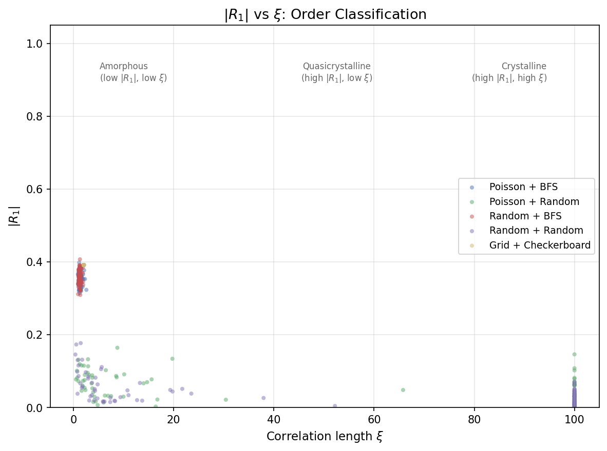
For each condition, the seed whose $E_{\mathrm{contrast}}$ ($k = 1$) is closest to the median is shown. Images are rendered at $k = 1, 2, 3, 4$ to illustrate the visual effect of layering. Note that $k$ does not affect the quality metrics, which depend only on the primary angle $\phi_i$.
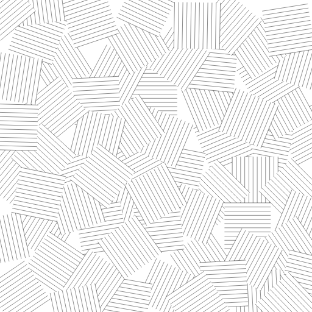
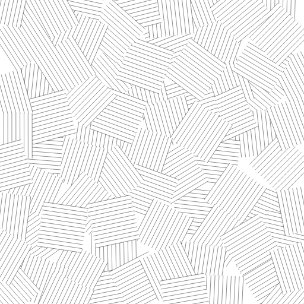
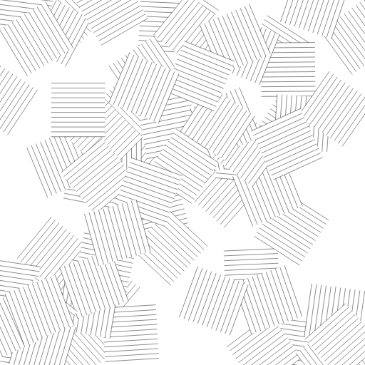
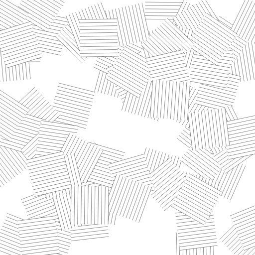
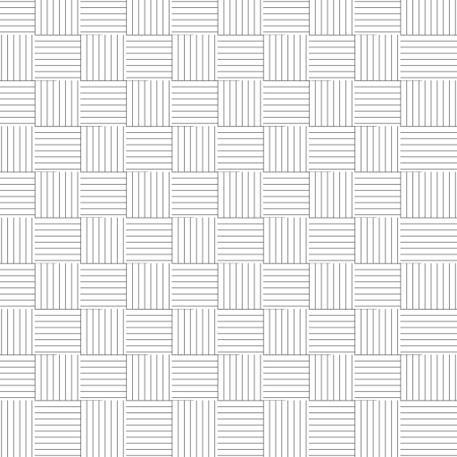
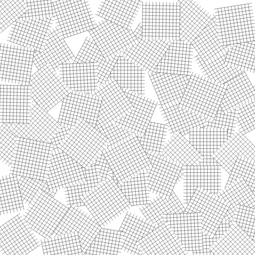
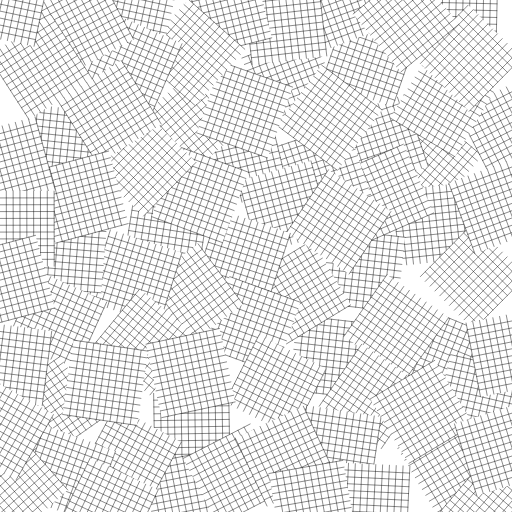
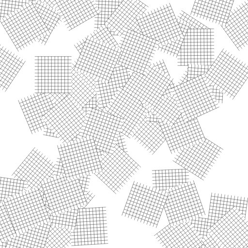
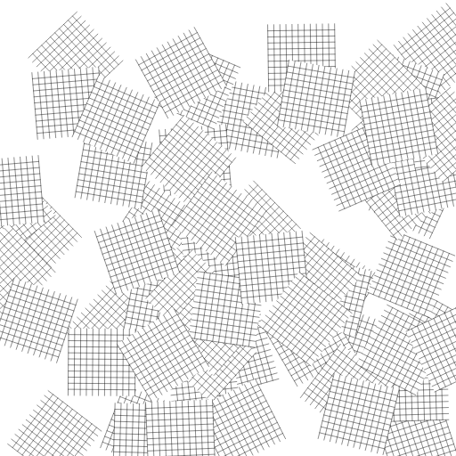
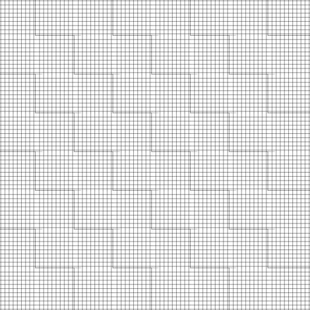
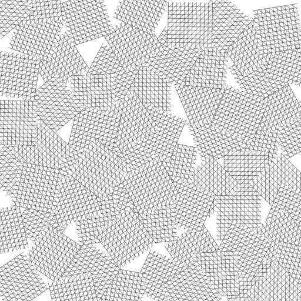
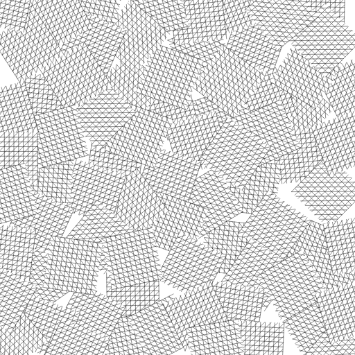
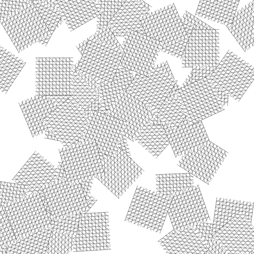
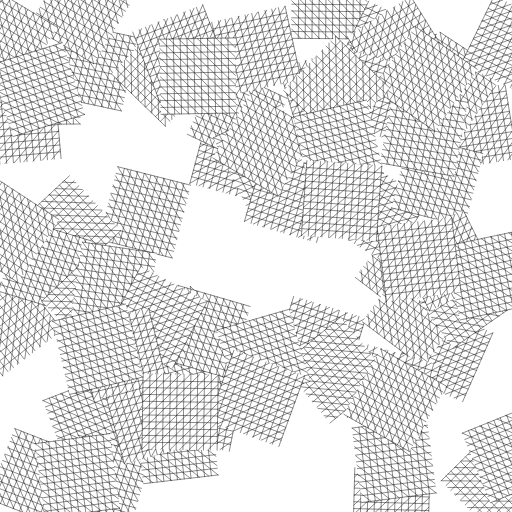
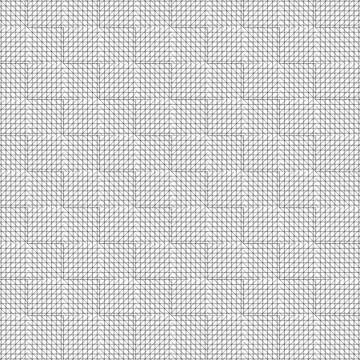
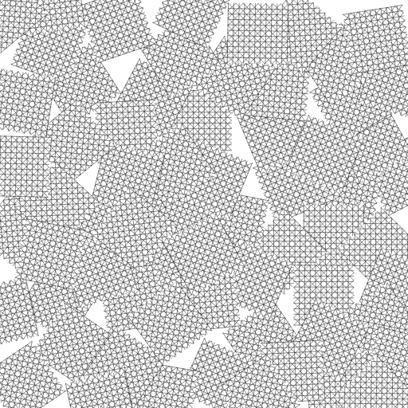
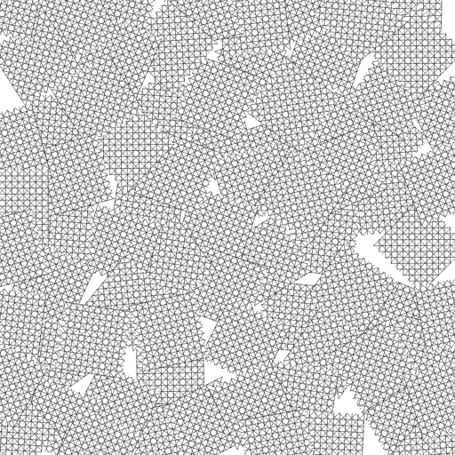
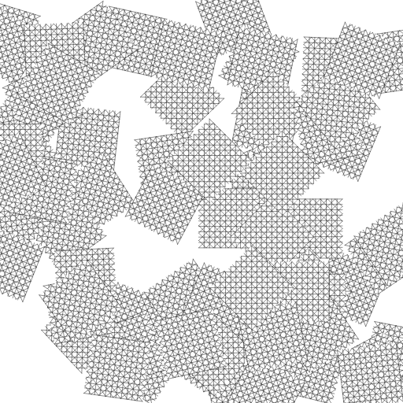
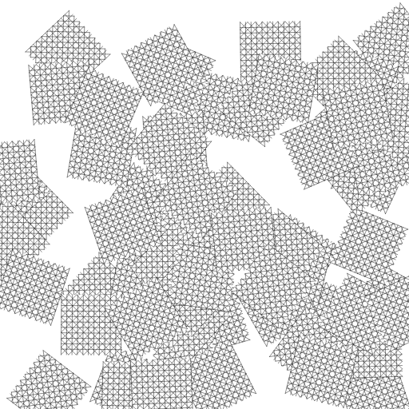
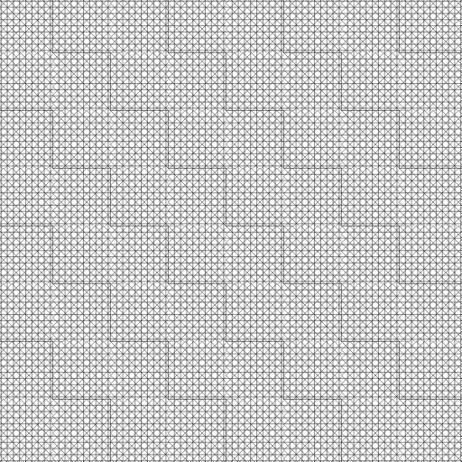
The results in Section 6 reveal clear performance differences among the five conditions. Sections 7.1–7.2 analyse the two factors of the 2×2 factorial design, Section 7.3 reinterprets the checkerboard condition through the lens of crystalline vs. quasicrystalline order, Section 7.4 discusses what the $R_k$ autocorrelation metrics reveal about aperiodicity, Section 7.5 discusses $k$-invariance of the metric framework, and Section 7.6 identifies limitations.
The two-way ANOVA confirms that the angle assignment strategy is the dominant factor. For $E_{\mathrm{contrast}}$, the angle factor shows a large effect size ($\eta^2$), indicating that BFS greedy assignment accounts for the majority of variance in angle contrast. The BFS greedy strategy consistently outperforms random angle assignment on $E_{\mathrm{contrast}}$, confirming that local contrast maximisation via the adjacency graph is the primary driver of visual quality.
While the angular metrics ($E_{\mathrm{contrast}}$, $H_{\mathrm{angle}}$) show little sensitivity to placement strategy, the spatial metrics reveal a stark difference. Poisson-disk placement achieves near-perfect coverage ($C_{\mathrm{cov}} \approx 1$) thanks to the 1.4× tile expansion and minimum-distance guarantee, whereas uniform random placement leaves visible gaps ($C_{\mathrm{cov}} < 1$) due to tile clustering. The Voronoi cell area CV ($U_{\mathrm{vor}}$) confirms this: Poisson-disk conditions show significantly lower CV (more uniform spacing) than random conditions, which approach the theoretical Poisson process value of $\approx 0.53$. These spatial metrics capture a critical quality dimension — visual completeness — that the angular metrics alone cannot detect.
The Grid + Checkerboard condition can be understood through the analogy of crystalline vs. quasicrystalline order from condensed matter physics. By placing tiles on a regular grid and alternating between just two angles (0° and 90°), the checkerboard creates a crystalline pattern with competitive local contrast but severely limited angle diversity ($H_{\mathrm{angle}} \approx 0.28$, using only 2 of 12 bins). The Delaunay triangulation of the grid adds diagonal edges between same-angle tiles, which moderates the checkerboard’s $E_{\mathrm{contrast}}$ below the theoretical maximum and produces a modest $R_2$ rather than the ideal $+1$ of a pure 4-connected grid.
The $R_k$ metrics reveal the structure of angle correlations in each condition. BFS greedy conditions exhibit a mild positive $R_2 \approx 0.17$: maximising local contrast at each BFS step introduces a small same-angle correlation at distance 2, an expected side effect of greedy optimisation on finite-degree graphs. Random-angle conditions show $R_2 \approx 0$ (no correlation at any distance), as expected. The checkerboard’s $R_2 \approx 0.24$ is the highest, consistent with its periodic structure, though Delaunay diagonal edges dilute the purely 2-periodic signature.
The most robust discriminator of the checkerboard’s mechanical character remains $H_{\mathrm{angle}} \approx 0.28$ vs. $\geq 0.95$ for BFS conditions: using only two angles produces a visually repetitive pattern regardless of how well those angles contrast locally. The gridCheckerboard condition uses 64 tiles (8×8 grid), comparable to the ~69 tiles of Poisson-disk conditions, enabling direct metric comparison.
The full $R_k$ correlogram (Figure 10) reveals fundamentally different spatial structures across conditions. The checkerboard’s correlogram oscillates with period 2 ($R_k \approx (-1)^k$), never decaying — the hallmark of crystalline periodicity. Random conditions produce a flat correlogram near zero at all distances: no angular structure at any scale. BFS greedy conditions show a qualitatively different pattern: strong negative $R_1$ (high nearest-neighbour contrast) that decays rapidly, with $R_2 \approx 0.17$ reflecting the structural side effect of greedy maximisation (tiles at distance 2 are pushed in similar directions by their shared intermediate neighbour), and near-zero correlations by $k = 3$–$4$.
The correlation length $\xi$ quantifies this decay rate. BFS conditions achieve small $\xi$ values ($\approx 1$–$2$), indicating that angular correlations are confined to the immediate neighbourhood. The checkerboard produces large or infinite $\xi$ (the exponential decay model fails because $|R_k|$ does not decay). Random conditions yield $\xi \approx 0$ (no correlation to decay from).
This three-way separation — crystalline (large $\xi$, periodic $R_k$), quasicrystalline (small $\xi$, decaying $R_k$ from strong $|R_1|$), and amorphous (near-zero $R_k$ everywhere) — directly parallels the classification of orientational order in condensed matter physics. In liquid crystal theory, the correlation length characterises the spatial extent of nematic ordering (de Gennes & Prost, 1993); in frustrated antiferromagnets, short correlation lengths arise from the impossibility of simultaneously satisfying all pairwise constraints on a non-bipartite graph (Toulouse, 1977). The BFS greedy algorithm produces exactly this frustrated state: each tile’s angle is maximally different from its neighbours, but this local repulsion cannot propagate coherently through the irregular Poisson-Voronoi topology.
The relationship $E_{\mathrm{LdG}} = (1 - R_1)/2$ (Section 3.3) explains why the previously used Landau–de Gennes energy was redundant with $E_{\mathrm{contrast}}$: both measure the same lag-1 angular repulsion, merely with different transformations. The full correlogram and derived $\xi$ capture a genuinely independent property — the spatial structure of angle correlations beyond immediate neighbours — that $E_{\mathrm{contrast}}$ alone cannot detect. The $|R_1|$ vs $\xi$ scatter plot (Figure 11) visualises this two-dimensional classification, with the Poisson + BFS condition occupying the quasicrystalline region.
An important property of all six quality metrics is their invariance to the kake count $k$. All six metrics — $E_{\mathrm{contrast}}$, $H_{\mathrm{angle}}$, $R_2$, $R_3$, $C_{\mathrm{cov}}$, and $U_{\mathrm{vor}}$ — depend only on the primary angle $\phi_i$ of each tile, which is determined entirely by the tile placement and angle assignment strategies. The secondary strokes added for $k \geq 2$ (at fixed angular offsets of 45°, 90°, etc.) do not influence any of the metrics.
This $k$-invariance is a limitation of the current metric framework: the metrics cannot distinguish between a $k = 1$ and $k = 4$ configuration that share the same primary angles, even though they look very different visually. We acknowledge this as a gap and propose $k$-aware metrics as future work (Section 8.5).
The experiment framework and quality metrics established in this report open several directions for future research.
In traditional manga practice, artists create smooth tonal gradients by varying the kake count $k$ across a region — transitioning, for example, from 1-kake (lightest) to 4-kake (darkest) to depict the curvature of a face or the fall of shadow. Our current implementation uses a uniform $k$ across all tiles. A natural extension is to accept a scalar field $k(x, y)$ that maps spatial position to kake count, enabling automatic kakeami gradation. The quality metrics defined in Section 3 would need to be extended to handle heterogeneous $k$ values, e.g. by weighting edge contrast contributions by the local $k$.
A key insight of this work is that the proposed algorithm is pattern-agnostic along two independent axes: the fill content drawn inside each tile, and the tile shape itself. The Poisson-disk placement, Voronoi adjacency construction, and BFS greedy angle assignment operate solely on tile centres and primary angles — neither the rendering primitive nor the tile boundary geometry participates in the optimisation. This opens two complementary directions for generalisation.
The rectangular tile shape can be preserved while replacing straight-line hatching with a fundamentally different fill primitive. For example, placing dots along the hatch-line positions at regular intervals produces a stipple pattern whose directional alignment reveals the tile’s primary angle without drawing any continuous line. Other candidates include small crosses, short dashes, concentric arcs, or any oriented motif. Because the fill is independent of the placement framework, the same quality metrics ($E_{\mathrm{contrast}}$, $H_{\mathrm{angle}}$, $R_k$) remain valid: they depend only on the primary angle $\phi_i$ of each tile, not on how that angle is visually manifested inside the tile.
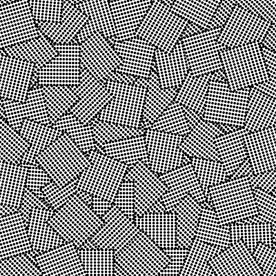
Independently of the fill content, the tile shape itself can be generalised. Our algorithm already computes a Voronoi partition internally to determine tile adjacency; the Voronoi cells themselves are natural, non-rectangular tile candidates. Each Voronoi cell is an individual kakeami unit: the BFS greedy algorithm assigns an angle to each cell, and the cell polygon is hatched directly — without grouping multiple non-rectangular shapes into a rectangular container. Other tile geometries (regular hexagons, triangles, Penrose rhombi, etc.) are equally viable, as long as an adjacency graph can be constructed.
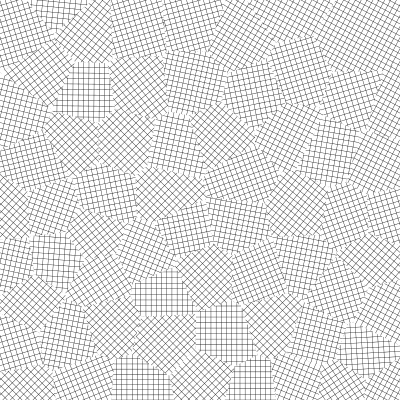
Together, these two axes of generalisation suggest that the quality metrics and optimisation framework introduced in this work are applicable to a broad class of oriented tile-based texture synthesis problems — any setting where a surface must be covered by directed pattern units with maximal local angular contrast.
Nawaami (ナワアミ, also called kakenawa カケナワ, literally “rope net”) is a related manga technique that replaces straight hatching lines with curved, sinuous strokes bundled within trapezoidal guide shapes. These curved bundles chain together to form flowing, rope-like textures that convey emotional qualities distinct from standard kakeami — particularly anxiety, unease, and foreboding (Emiya Manga Class). Extending our generation algorithm to nawaami would require replacing the straight-line hatch primitives with parametric curves (e.g. sine-modulated paths or splines) while preserving the tile-based placement and adjacency-optimised angle assignment. The quality metrics could be adapted by defining an analogous RP¹ distance on the tangent direction of curved strokes at tile boundaries.
With the correlation length $\xi$ now established as a concrete measure of angular order (Section 7.4), several theoretical directions remain open. The angular power spectrum $\hat{R}(\omega) = \sum_k R_k e^{-i\omega k}$ would provide a frequency-domain characterisation: a flat spectrum for amorphous order, a sharp peak at $\omega = \pi$ for checkerboard periodicity, and a broad low-frequency hump for the quasicrystalline BFS conditions.
Proving bounds on $R_k$ for BFS greedy on Poisson-Voronoi graphs is a natural next step. The angle assignment problem can be viewed as continuous graph colouring with repulsive constraints, relating it to the circular chromatic number $\chi_c(G)$. For Poisson-Voronoi graphs (expected chromatic number $\approx 4$), tight bounds on $\xi$ as a function of graph topology would formalise the connection between spatial statistics and quasicrystalline order.
As discussed in Section 7.5, the current metrics are $k$-invariant — they depend only on the primary angle and cannot evaluate the visual contribution of secondary hatch layers. Future work should develop metrics that capture $k$-dependent properties, such as the visual density contrast between adjacent tiles at different $k$ values, the uniformity of angular coverage within each tile, or perceptual texture similarity measures (e.g. SSIM-based comparisons between generated and reference kakeami patterns at each $k$ level).
This report presented the first mathematical formulation of kakeami quality and a controlled experiment evaluating tile placement and angle assignment strategies. We identified five properties of good kakeami and proposed complementary metrics to measure them: angular metrics ($E_{\mathrm{contrast}}$, $H_{\mathrm{angle}}$), the full $R_k$ autocorrelation correlogram with derived correlation length $\xi$, and spatial metrics ($C_{\mathrm{cov}}$, $U_{\mathrm{vor}}$). The central insight is that good kakeami exhibits quasicrystalline order — strong short-range angular contrast ($|R_1| \approx 1$) with rapidly decaying correlation ($\xi \approx 1$–$2$) — clearly separated from both crystalline periodicity (checkerboard: $\xi \to \infty$) and amorphous randomness ($|R_1| \approx 0$). The $R_k$ correlogram and $\xi$ quantify this distinction using standard tools from spatial statistics and liquid crystal physics. The 2×2 factorial experiment with 100 seeds demonstrated that angle assignment is the dominant factor ($\eta^2 \approx 0.94$), while Poisson-disk placement provides superior spatial uniformity. The proposed Poisson-disk + BFS greedy combination achieves the best overall quality. Future work includes tonal gradation via spatially varying $k$, generalisation to arbitrary tile shapes and fill patterns, spectral analysis of the $R_k$ sequence, and development of $k$-aware quality metrics.